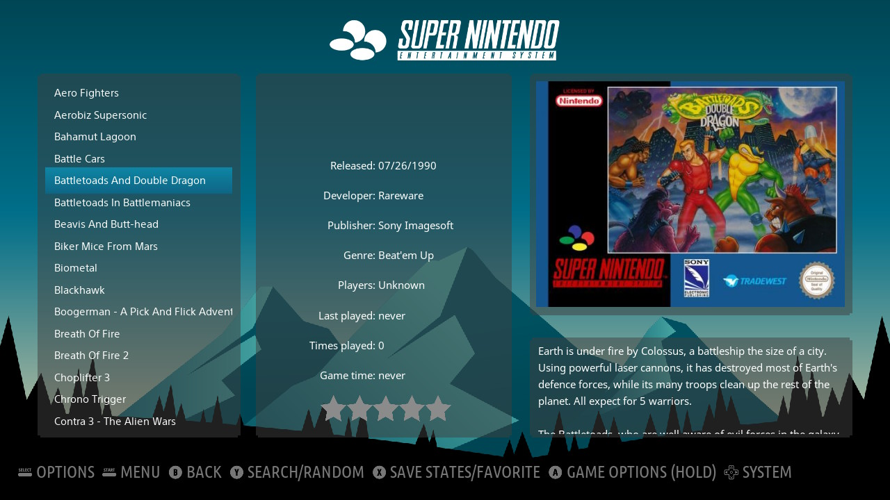
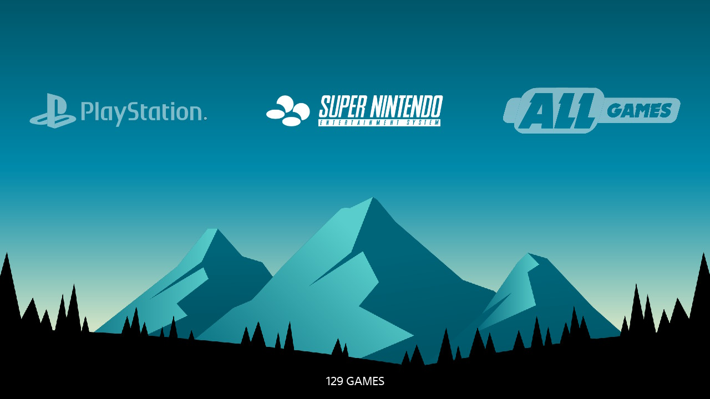
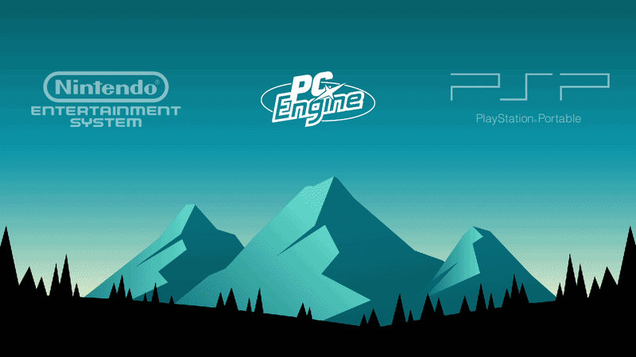
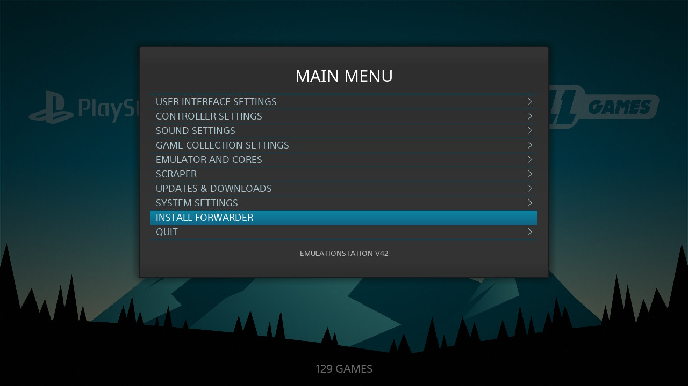
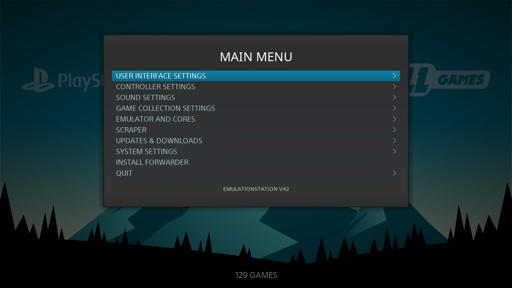
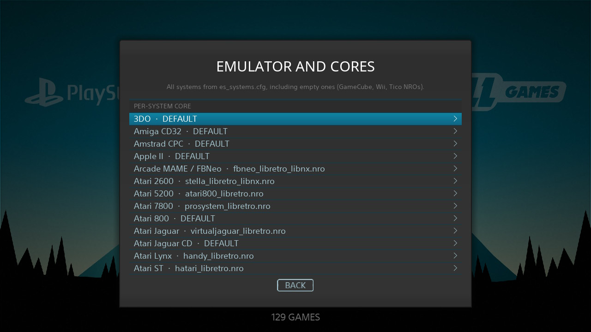
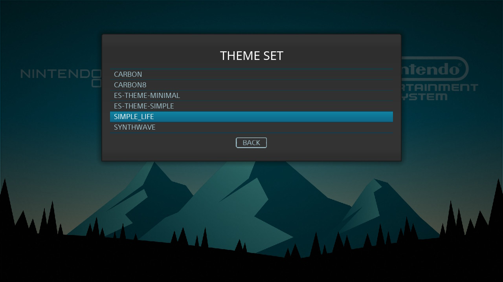

Batocera compatibility
Gamelists, systems, scraper, screensaver, and the same themes as Batocera ES.
Nintendo Switch Homebrew · v1.0
NXstationB is a native Nintendo Switch port of Batocera EmulationStation. It is a sibling of NXStation, built so you can run the Batocera UI, themes, and scraper on Switch without a Linux OS.

What it is
NXstationB takes Batocera’s EmulationStation (the same UI that powers thousands of Batocera boxes) and runs it as a Switch NRO. It is open source at the Batocera layer (GPL). The Switch port sources will be released in due time.
Gamelists, systems, scraper, screensaver, and the same themes as Batocera ES.
Stock retroarch_switch.nro and libnx cores. Custom NROs (Tico and friends) via Emulator and Cores settings.
Ships with Simple_Life, Minimal, and Simple. Theme downloader works over Wi-Fi.
Reads sdmc:/roms/ the same way NXStation does. Playtime logs into NXStation analytics when that folder exists.
Returning from a game restores the last system and title, with a shortened boot that skips ROM scan.
Batocera EmulationStation is GPL. Switch port sources will be published when they are ready for others to build.
Capabilities
Set your screenscraper.fr username and password in Scraper settings.
Full speed, smooth video preview with clear audio.
Pick a .nro per system: stock libretro or standalone (Tico Azahar, Tico Dolphin, and more).
If /switch/NXStation is on the SD, sessions are written to NXStation’s playtime JSON so analytics stay in one place.
Uses the real Switch Wi-Fi IP. Batocera theme packs install into /switch/nxstationb/themes.
Hold R on a real game, then launch NXStationB.nro. Settings includes an option to install a forwarder.
Screenshots
Main menu, game list, settings, custom cores, and themes on real Switch hardware.






Get started
Get NXStationB.nro from GitHub Releases and place it at sdmc:/switch/nxstationb/NXStationB.nro.
Use sdmc:/switch/retroarch_switch.nro and cores under sdmc:/retroarch/cores/. Rax cores are optional but recommended on firmware 22.5+ (see FAQ).
Hold R on any installed game and start NXstationB from hbmenu. Do not launch from Album.
Same layout as NXStation / ES-DE: sdmc:/roms/nes, snes, gba, and so on. First boot seeds es_systems.cfg and bundled themes.
Support
No. NXStation is a custom Borealis frontend. NXstationB is Batocera EmulationStation running as an NRO. They share ROM folders and, if both are installed, playtime analytics. Use the NXStation button in the top bar to go back.
Rax cores are recompiled RetroArch libretro cores built with a quit handshake that works on Nintendo Switch firmware 22.5 and newer. Stock Switch cores often crash or exit to the Home Menu when you close a game in Title Override mode. Rax cores fix that crash path so you can return to NXstationB (or NXStation) instead of being dropped on the Home screen.
They are optional for playing, but strongly recommended on FW 22.5+ if you want a stable return to the frontend. Rax builds will be announced on GitHub when the separate repositories are ready.
Not strictly. Stock RetroArch Switch cores still launch games. On firmware 22.5+, though, closing a game with stock cores usually sends you to the Home Menu. Re-open NXstationB with Title Override to resume the last game, or install Rax cores when they are published for a smoother return.
Batocera EmulationStation itself is already open source (GPL). NXstationB’s Switch port sources will be released in due time.
Yes. Main menu → Emulator and Cores → pick a system → browse to any .nro (for example tico-azahar.nro).